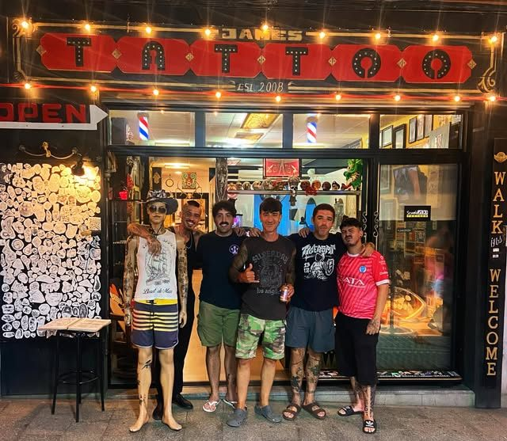

SINCE 2008WALK-INS WELCOMECARRER DEL CARME 14ENGLISH · FRANÇAIS · ITALIANOREALISM · BLACK & GREY · MAORI · COVER-UP
Del stencil a la piel
01
Idea y diseño
Nos cuentas qué quieres, aunque no lo tengas claro. Lo dibujamos contigo y le damos nuestro toque.
02
Stencil
Pasamos el diseño a papel de calco y lo colocamos en la piel. Lo movemos hasta que encaje perfecto con tu cuerpo.
03
Tinta
Tatuamos a tu ritmo: te preguntamos cómo vas y paramos cuando lo necesites. Las piezas grandes, por sesiones.
04
Cuidados
Te explicamos cómo curarlo para que quede como el primer día.
Trabajos
Cada pieza empieza como un stencil. Bájalo y mira cómo se tatúa. Pasa el cursor para volver al stencil.
León en el pecho · realismoCasco espartano · 1950Virgen · black and greyMandala y geometríaPistón 46 · colorLeón con coronaManga moteraBujía · black and greyAnimeColorOrnamentalCruz fine line
El nombre detrás del estudio, tatuando en Lloret desde 2008. Realismo, black and grey, maorí y cover-ups: entiende rápido lo que quieres y le da su toque personal.
«Enseguida entendió lo que yo quería e incluso le dio su toque personal que me encantó.»
Tatúa en el estudio junto a Christian. Trato cercano para que estés cómodo de principio a fin.
«Me hice dos tatuajes con Tomy y han quedado muy bonitos, justo como quería. El trato fue cercano y me sentí muy cómoda en todo momento.»
Sofía · Google
Estilos
Realismo
Black & grey
Maorí y tribal
Cover-up
Lettering
Color
Mandalas y geometría
Motor y moteros
Religioso
Fine line
194 reseñas, 4,9 estrellas
«Doy 5 estrellas porque no se pueden dar más, ojalá pudiera dar 10 estrellas […] Si quieres tatuarte, tengas claro el diseño o no, aquí te van a ayudar totalmente, de manera muy profesional.»
José David · cover-up maorí con Christian
«Unos genios, muy buena experiencia, trato súper agradable y muy buen ambiente, el tatuaje ha quedado genial.»
Ayoub · Google
«Muy buen trato, muy buenos precios, así que volver vuelvo seguro.»
Google

Carrer del Carme, 14
Horario
Todos los días, de 11:00 a 22:00
Citas
Por mensaje directo en Instagram o llamando al600 86 02 49
Sin cita
Walk-ins welcome: pásate y miramos qué podemos hacer en el momento.